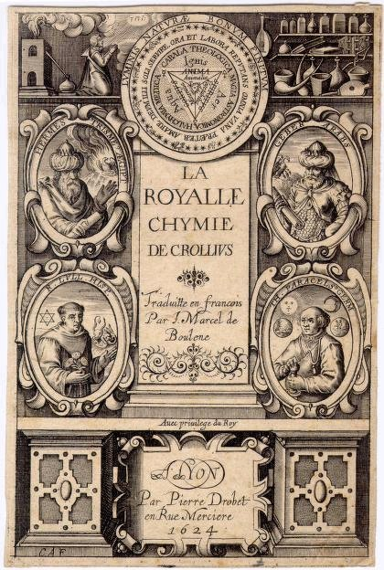

frontispice de la Royale Chimie de Crollius, 1624


revu
le 3 décembre 2006
L'Entrée Ouverte au Palais Fermé du Roi [chap I à VIII, Philalèthe - en cours]

frontispice de la Royale Chimie de Crollius, 1624
revu le 3 décembre 2006
Nous présentons au lecteur quelques textes alchimiques en relation avec nos recherches. Tous les textes sont annotés et commentés ; certains sont illustrés selon les originaux ; pour d'autres textes, nous avons ajouté des gravures ou des photographies qui nous paraissaient illustrer au mieux le propos. Comme à l'accoutumée, nous décrivons des procédés ou des tours de main voilés dans certains textes. Nous tenons à remercier de façon toute particulière les responsables de deux sites où l'on trouve des textes intéressants sur notre sujet : Librairie du merveilleux et Hermétisme et alchimie. Ainsi que les « amoureux de science » contemporains qui oeuvrent sur Internet pour faire en sorte que les traités les plus importants soient consultables par tous. Les textes sont présentés dans l'ordre chronologique où nous les avons étudiés. Plus de cinquante textes sont ainsi étudiés dont certains attendent encore d'avoir leur commentaire achevé. Une toile de renvois en hypertexte a été préparée, en une sorte de labyrinthe, unique difficulté que rencontrera le lecteur sur ces pages puisque aucun point de science n'a été omis et aucun mensonge prononcé. A titre personnel, je tiens ici à remercier en particulier MM. Alain Mauranne et Philippe Litzler pour les très nombreux documents, images et photographies qu'ils ont généreusement mis à notre disposition, et qui nous ont grandement aidés lors de l'analyse des textes. Toutes les autres sections sont répertoriées dans le plan général et dans l'introduction à l'alchimie. La page d'index présente un résumé de tout cela.
Les Douze Clefs de Philosophie [attribué à Basile Valentin, apocryphe - commentaire entièrement revu et mis à jour le 13 mars 2004]
Le Livre des Figures Hiéroglyphiques [attribué à Nicolas Flamel, apocryphe] précédé d'une étude sur la maison de Nicolas Flamel
La Parole Délaissée ou Verbum Dimissum [Bernard Le Trévisan]
Le Livre Secret de la Philosophie Occulte [attribué à Artephius, cf. infra in Chevreul - commentaire entièrement revu le 28 janvier 2004]
Le Chemin du ciel chymique de Jacques Tol
Le traité du Mercure [Nouvelle Lumière Chymique ou Douze Traités] d'Alexandre Sethon
La Clavicule attribué à Raymond Lulle [apocryphe], suivi de La Lumière des Mercures [apocryphe]
Le chemin du chemin [Semita semitae] attribué à Arnauld de Villeneuve [apocryphe]
Le Miroir d'Alchimie [Speculum Alchemiae] attribué à Roger Bacon [apocryphe] précédé d'études baconiennes [divers articles sur l'Opus majus, l'Opus minus, l'Opus Tertium, etc.]
La Génération des minéraux métalliques [BERGBÜCHLEIN] traduit et commenté par A. DAUBREE (corrigé, avec des annotations)
Le Trésor des Trésors attribué à Paracelse avec une introduction à Paracelse de Franck (membre de l'Institut)
Le Traité du Ciel terrestre de Vinceslas Lavinius de Moravie
Explication très curieuse des Enigmes et Figures hiéroglyphiques du Sieur Esprit Gobineau de Montluisant
Du Vitriol philosophique de Tripied
Le Composé des composés attribué à Albert le Grand [apocryphe], avec des textes tirés de l'Histoire de la Chimie de F. Hoefer, de l'Astronomie du Moyen Âge ainsi que du Système du Monde, de P. Duhem
Le Songe verd attribué à Bernard Le Trévisan
La Toyson d'or de Salomon Trismosin [alias Splendor Solis]
Histoire Naturelle des Minéraux, de Buffon [extrait sur les pierres précieuses]
La Teinture [texte de Théophile-Jules Pelouze]
La Tourbe des philosophes [attribué parfois à Arisleus, version en 72 sentences. Une autre version en soixante dix huit sentences semble nettement mieux construite.]
Le Filet d'Ariadné [attribué à Heinrich von Batsdorff, pseudonyme]
Huginus à Barma ou le règne de Saturne changé en siècle d'or [anonyme]
Epitre du feu philosophique [attribué à Pontanus]
La Philosophie Naturelle restituée [Jean d'Espagnet]
L'oeuvre secret de la philosophie d'Hermès [Jean d'Espagnet]
Le Char Triomphal de l'antimoine [attribué à Basile Valentin, apocryphe]
La Lumière sortant par soi-même des Ténèbres [poème attribué à Marc Antonio Crasselame Chinese. Le texte est complété d'un commentaire très important de Bruno de Lansac]
Les Douze Portes [George Ripley, appelé aussi Compound of Alchemy]
Le Désir désiré [attribué à Flamel, apocryphe]
L'Élucidation du Testament [attribué à Raymond Lulle, apocryphe]
Lettre aux vraix disciples d'Hermès [Limojon de Saint-Didier]
Le Triomphe hermétique [Limojon de Saint-Didier]
Le Traité du Sel [extraits et notes, commentaires - attribué à Michel Sendivogius. Il est probable que Sendivogius se soit approprié des notes d'Alexandre Sethon. Le Traité du Sel et le Traité du Soufre ne sont pas d'Alexandre Sethon]
La Table d'Emeraude - Tabula smaragdina [attribué à Hermès Trismégiste, apocryphe avec un commentaire d'Hortulain]
Mutus Liber [attribué à Saulat des Marez]
Philosophia reformata [Jean-Daniel Mylius]
Traité des Choses Naturelles et Supernaturelles [attribué à Basile Valentin, apocryphe]
Atalanta fugiens [introduction - chapitres :{ I à L } - cinquante fugues : fuga 1-4 - fuga 5-9 - fuga 10-14 - fuga 15-19 - fuga 20-24 - fuga 25-29 - fuga 30-34 - fuga 35-39 - fuga 40-44 - fuga 45-50 -] [Michel Maier]
Articles d'Eugène Chevreul, paru dans le Journal des Savants, entre 1843 et 1850 [à propos de l'Histoire de la Chimie de Ferdinand Hoefer] - biographie d'Eugène chevreul par Marcellin Berthelot - divers articles repris dans nos sections de l'Idée alchimique.
a)- Note de critique historique et littéraire, concernant deux écrits alchimiques publiés sous le nom d'Artefius et sous celui d'Alphonse X
b)- DU TRAITÉ ALCHIMIQUE D'ARTEFIUS intitulé : CLAVIS MAJORIS SAPIENTIAE [trois articles]
c)- COURS DE PHILOSOPHIE HERMETIQUE OU D'ALCHIMIE en dix-neuf leçons, traitant de la théorie et de la pratique de cette science, ainsi que de plusieurs opérations indispensables pour parvenir à trouver et à faire la pierre philosophale...par Cambriel [quatre articles]
d)- Résumé d'une histoire de la Matière depuis les philosophes grecs jusqu'à Lavoisier inclusivement [t. XXXIX des Mémoires de l'Académie des Sciences]
e)- HISTOIRE DES PRINCIPALES OPINIONS QUE L'ON A EUES DE LA NATURE CHIMIQUE DES CORPS, DE L'ESPÈCE CHIMIQUE ET DE L'ESPÈCE VIVANTE
f)- Critique de l'Histoire de la Chimie de Ferdinand Hoefer [14 articles]
g)- Considérations sur les espèces minéralogiques et chimiques et EXAMEN D'UN MÉMOIRE sur une nouvelle méthode pour obtenir des combinaisons cristallisées par la voie sèche et sur ses applications à la reproductions des espèces minérales [critique des travaux de Jacques-Joseph Ebelmen]
h)- Tableau de la science de l'Antiquité et du Moyen Âge
i)- Critique d'une histoire de la magie [Eusèbe Salverte]
j)- article sur l'Archidoxia de Paracelse et la Phytognomonia de J.B. Porta -
k)- CONSIDÉRATIONS GÉNÉRALES SUR LES MÉTHODES SCIENTIFIQUES ET APPLICATIONS À LA MÉTHODE A POSTERIORI DE NEWTON ET À LA MÉTHODE A PRIORI DE LEIBNITZ -
l) - Distribution des connaissances humaines du ressort de la philosophie naturelle
m) - De l'Abstraction considérée relativement aux Beaux-Arts et à la Littérature -
n)- La Vérité sur l'Invention de la Photographie - Considérations sur la Reproduction, par les procédés de M. Niépce de Saint-Victor, des images gravées, dessinées ou imprimées -
o)- HISTOIRE NATURELLE générale des règnes organiques, principalement étudiée chez l'homme et les animaux, par Isidore Geoffroy Saint-Hilaire. Paris, librairie de Victor Masson, place de l'Ecole-de-Médecine, n° 17, 1854 et 1859. Cf. Philosophie Naturelle Restituée, introduction.
Les
Origines de l'Alchimie [Marcellin Berthelot, incomplet]
Divers articles dans le Journal des Savants par Marcellin Berthelot [18 articles]
Un épisode alchimique en Alsace Lorraine [Raymond de Souhesmes]
l'Argentaurum [Paul Bary, revue de Physique et de Chimie de Lorraine], texte précédé de L'Affaire de l'Argentaurum -
La Monade Hiéroglyphique [John Dee]
Le Vray Livre du docte abbé Sinesius [apocryphe]
Essai sur l'Art de la Verrerie [C. Loysel] - partie I et II -
Révélation des teintures des sept métaux [attribué à Basile Valentin, apocryphe]
Pretiosissimum Donum Dei [attribué à Georges Aurach, alias Anrach - 4 versions avec 64 planches présentées]
Philosophie Naturelle des Métaux [Bernard Le Trévisan]
Etudes sur le métamorphisme des roches [Gabriel-Auguste Daubrée] - partie I et II -
Le Métamorphisme des roches [Achille Delesse] - partie III et IV -
Les Entretiens du roi Calid et de Morien [anonyme]
L'Escalier des Sages [Barent Coenders van Helpen] - I -
Minéralogistes et chimistes français [Eloges sur : Sainte Claire Deville - Jean-Baptiste Dumas - Elie de Beaumont - Jules Pelouze - Marcellin Berthelot]
Le poème du Phénix [attribué à Lactance - texte, commentaire, études diverses sur Lactance]
Sept Chapitres d'Hermès [apocryphe]
Introduction à la Chimie des Anciens [Marcellin Berthelot] - I - II - III - IV - V - VI - VII -
Dialogue de Marie et d'Aros sur le magistère d'Hermès [apocryphe]
Typus Mundi [anonyme]
Le Trésor des Trésors [Nicolas Grosparmy]
Les Cinq Livres - la Clef du Secret des Secrets [Nicolas Valois]
Le Livre de Crates [anonyme]
La Légende de Seyfried à la peau de corne [Sifrit l'encorné]
La Chrysopée du Seigneur [attribué à R. Lulle, apocryphe]
Le Sommaire du Rosaire d'Arnauld de Villeneuve [Lacidius]
Bernard Palissy et l'alchimie [un fragment]
Aphorismes Basiliens [attribué à Nicolaus Niger Hapelius, anagramme de Raphael Eglinus Iconius]
Le Testament et le Bréviaire [attribués à Nicolas Flamel, apocryphes]
Notice sur la maison de Lisieux (le manoir de la salamandre) [M. H.]
L'Enfant hermaphrodite du Soleil et de la Lune [anonyme, avec des canons attribués à Thomas Norton]
Douze Leçons sur l'art de la verrerie [Melchior Peligot]
Vie de saint Antoine par saint Athanase [Charles de Rémondange]
Introduction aux mss alchimiques d'Isaac Newton
Vie de saint Jean Baptiste [extraits, Ernest Razy]
Le
Psautier
d'Hermophile [compilé par Joubert de la Salette]
Sol Sine Veste
[Johann
Christian Orschall]
article sur les vases murrhins
[Rozières]
Récréations
Hermétiques [anonyme]
Diamants et Pierres Précieuses [Louis Dieulafait] - partie I -
Opuscule Très
Excellent de la Vraie Philosophie Naturelle des Métaux
[Denis Zachaire
ou Denys Zecaire]
Clavis Majoris Sapientiae [attribué
à Artephius, texte latin numérisé, Bibliotheca
Chemica Curiosa, Manget, t. II, pp. 503-509]
La Cassette du Petit Paysan
[attribué à Grasseus ou Grasshoff]
Le Livre d'Alze [6ème
partie du Dyas Chymica Tripartita, compilation attribuée
à Grasshoff]
Tractatus aureus de
lapido
philosophico
[1ère partie du Dyas
Chymica
Tripartita ; auteur probable Hadrian Mynsicht, alias Madathanus]
Aureum Seculum Redivivum [2ème
partie du Dyas Chymica Tripartita, Hadrian Mynsicht]
A Manuel of
Chemistry [William Thomas Brande] : Prelude
to Chemistry : bibliographie
[§ I] - introduction à
l'alchimie [§ II - III]
Verses belonging to an emblematic Scrowle [Ripley Scrowle in Ashmole, Theatrum Chemicum Britannicum]
Histoire
Naturelle de Georges Cuvier [extraits : dixième et
onzième leçon, voir Idée
alchimique VI]
Verba Aristei Patris ad Filium [Paroles d'Aristée à son fils précédé d'une Lettre d'un Philosophe de Limojon de saint Didier]
Lettres sur la chimie [Justus von Liebig, extraits : Lettres XXXVI et XXXVII]
Quelques notes sur : Orthelius, à propos de son Commentarius in novum Lumen Chymicum Michaelis Sendivogii Poloni, XII. figuris in Germania repertis illustratum -
Du jeu des Tarots, Court de Gébelin [extrait du Monde primitif, analysé et comparé avec le monde moderne, vol. 8, tome 1, Paris 1781] -
Les Essays de Jean Rey [L.-A. Hallopeau et Albert Poisson] in idée alchimique, 7 -¯
Les collections de textes alchimiques
1. Bibliothèque
des
philosophes chimiques [Guillaume Salmon, Jean
Maugin de Richebourg]
: I - II - III
- IV -
2. De
Alchimiae Gebri Arabis [Petreus,
version 1545] et 1541
= Practica vera alkimia [Ortholanus ou Hortulanus]-
3. Theatrum
Chemicum [Lazarus Zetzner]
: I
- II
- III
- IV
- V
- VI
-
4. Musaeum
Hermeticum, 1625 [Luca Jennis]
-
5. Musaeum
Hermeticum, 1678 -
6. Bibliotheca
Chemica Curiosa [Jean Jacques
Manget]
: I
- II
-
7. Anatomia
Auri [Mylius] -
8. De
alchimia libri tres [pseudo-Geber]
-
9. Alchemiae,
quam vocant, artisque metallicae doctrina [Gratarole] : I - II - Verae
Alchimiae [Gratarole]
-
10.Theatricum
Chemicum Britannicum [Ashmole]
-
11. Pretiosa
margarita novella [Petrus Bonus]
-
12. Bibliotheca
chemica [Ferguson] : introduction -
13. Sceptical
chymist [Boyle] -
14. Artis Auriferae [Perna] : I - II
-
15. Hermetisches
A.B.C : I - II - III - IV -
16. Dreyfaches
Hermetisches Kleeblat [Vigilantius
de Monte Cubiti] : a. Traité du Sel de Nuisement
- b. Mercurius
Redivivus [8 traités de
Samuel Norton] - c. Büchlein vom Stein der Weisen [Marsile Ficin] - d. Warfferstein
der Weissen, Francfort, 1656.
17. Deutsches
Theatrum Chemicum [Friederich
Roth-Scholtzen.] : I
- II - III
18. Ars
Chemica [Samuel Emmel]
-
19. Ginaeceum
Chimicum [Io de Treuis]
-
20. De
Alchimia Opuscula complura [Cyriacus
Iacobus]
21. Medicina Practica
[William Salmon]
22. Thesaurinella
olympica aurea tripartita I -
II - III [Benedictus Figulus]
23.
Rosarium
novum olympicum et benedictum [Benedictus Figulus]
24. Pandora
Magnalium Naturalium [Benedictus
Figulus]
25. Hermetisches
Museum [Albrecht] I - II - III - IV -
26. Divers
Traitez de la Philosophie Naturelle -
27. Aureae Occultae
Philosophum [alias Azoth]
-
28. Collectanea Chymica [William Cooper] -
29. Aurifontina Chymica [William Cooper] -
30. Eröffnete Geheimnisse des Steins der Weisen [Christian Liebezeit]
- mss
alchimiques d'Isaac Newton
- mss alchimiques du
Museum d'Histoire Naturelle [fonds
Chevreul]
- mss alchimiques de la
bibliothèque nationale de France